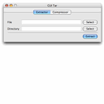
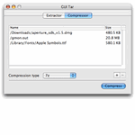
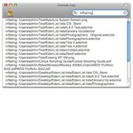

Learn about GUI Tar
GUI Tar is a wrapper application which acts as the front end to the 7za, tar, gzip, bzip2, uncompress, unrar, unzip, and zip UNIX utilities. These utilities handle the complicated work, while GUI Tar provides a pleasant and easy method to interact with these system tools. GUI Tar is divided into two sections: Extractor and Compressor.
Extractor |
|
|  |
GUI Tar Extractor offers the functionality to uncompress and extract files from archives. The following files can be opened by Extractor: .7z, .tar, .tgz, .tar.gz, .dmg.gz, .svgz, .gz, .tar.z, .z, .Z, .tar.Z, .taz, .tbz, .tbz2, .bz, .bz2, .rar, and .zip. |
Compressor |
|
|  |
GUI Tar Compressor can compress and/or archive a collection of files in .7z, .bz2, .tar, .tbz, .tgz, .gz, .Z, or .zip formats. Archive files and folders from multiple locations, instead of being restricted to just one directory. |
Console Log |
|
|  |
A new feature of GUI Tar 1.2, the console log displays additional information for what is happening in the background when GUI Tar is working. Open the console log by selecting Show Console Log from the Window menu. |